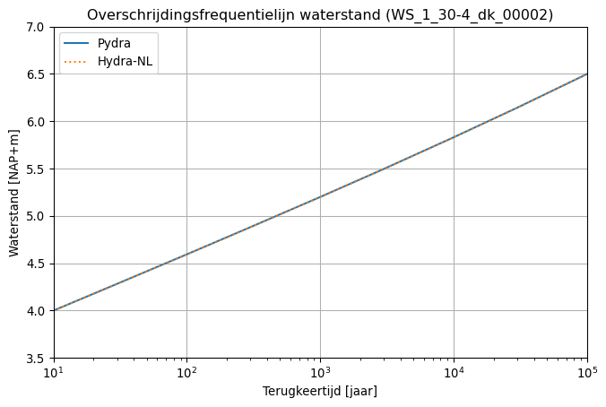

import matplotlib.pyplot as plt
import numpy as np
import pydra_core as pydraOverschrijdingsfrequentielijnen
Als demonstratie worden overschrijdingsfrequentielijnen voor de Borselle (Westerschelde/Kust) bepaald. Hieronder definiëren we de locatie van de database.
DB_PATH = "data/WBI2017_Westerschelde_30-4_v03.sqlite"HRDatabase
Met de HR database maken we een HRDatabase aan. Dit object beheert alle locaties in de HR database en helpt om batch berekeningen te maken.
hrdatabase = pydra.HRDatabase(DB_PATH)Eén van de functies van een HRDatabase object is het uitlezen van de namen van alle uitvoerpunten.
hrdatabase.get_location_names()['WS_1_30-4_dk_00006',
'WS_2_30-4_dk_00005',
'WS_1_30-4_dk_00004',
'WS_1_30-4_dk_00003',
'WS_1_30-4_dk_00002',
'WS_1_30-4_dk_00001']Settings
Met het HRDatabase maken we een Settings object aan voor het HR-uitvoerpunt ‘WS_1_30-4_dk_00002’. Het Settings object is voor Pydra hetzelfde als het ‘invoer.hyd’ bestand voor Hydra-NL is.
settings = hrdatabase.get_settings("WS_1_30-4_dk_00002")De settings zijn gebaseerd op wat standaard in Hydra-NL (versie 2.8.2) zit. Het is mogelijk om alle settings uit te lezen door het Settings object te printen.
print(settings)database_path = data/WBI2017_Westerschelde_30-4_v03.sqlite
location = WS_1_30-4_dk_00002
m_max = 9.0
m_step = 0.1
model_uncertainty_water_level_steps = 7
model_uncertainty_wave_height_steps = 5
model_uncertainty_wave_period_steps = 5
periods_block_duration = 360.0
region = 5.0
sea = 11.0
sea_level_probability_point1 = Zeewaterstand/Vlissingen/CondPovVlissingen_12u_zichtjaar2017_metOnzHeid.txt
sea_level_probability_point2 = Zeewaterstand/Hansweert/CondPovHansweert_12u_zichtjaar2017_metOnzHeid.txt
sea_level_probability_point3 = Zeewaterstand/Vlissingen virtueel/CondPovVlissingen-Additional_12u_zichtjaar2017_metOnzHeid.txt
sea_level_rise = 0.0
sigma_function = Sigmafunctie/Westerschelde/VS_sigmafunctie_WS_2017.txt
u_max = 55.0
u_repair = True
u_step = 1.0
wind_direction_probability = Windrichting/Westerschelde/KansenWindrichting_WS_2017.txt
wind_speed_probability = Windsnelheid/Vlissingen/Ovkanswind_Vlissingen_2017_metOnzHeid.txt
x_coordinate = 38672
y_coordinate = 383394Voordat berekeningen worden gedaan is het mogelijk om het Settings object aan te passen:
print("Origineel:", settings.m_max)
settings.m_max = 10.0
print("Aangepast:", settings.m_max)Origineel: 9.0
Aangepast: 10.0Location
Wanneer je tevreden bent met de settings in het Settings object, kan een Location object worden aangemaakt. Wanneer een location wordt aangemaakt lees Pydra de statistiek in en worden belastingsmodellen gegenereert. De statistiek wordt ingelezen vanuit de data/statistics map in de package. De belastingsmodellen worden geïnitieerd op basis van de eerder gekoppelde HR database in het HRDatabase object.
import warnings
warnings.filterwarnings("ignore") # future warnings are annoying
location = hrdatabase.create_location(settings)
# TODO: deze error beter afvangen:Nu het Location object is aangemaakt voor het HR uitvoerpunt ‘WS_1_30-4_dk_00002’, kan deze gebruikt worden in berekeningen.
Overschrijdingsfrequentielijn voor één uitvoerpunt
Pydra heeft verschillende rekenmodules (objecten). Hieronder gebruiken we de ExceedanceFrequencyLine module om de overschrijdingsfrequentielijn te berekenen. Voordat we dat kunnen doen moet eerst een rekenobject worden aangemaakt, hieronder fl. Het rekenobject omvat de instellingen voor de berekening, bijvoorbeeld voor welke variabel een frequentielijn moet worden berekend (hieronder waterstand (h)). Daarnaast zijn er nog een aantal optionele opties, zoals of er met modelonzekerheden moet worden gerekend (standaard : True), de stapgrootte van de frequentielijn (standaard : 0.05) en een aangepast bereik van waterstanden voor de frequentielijn (standaard tussen de 1ste en 99de percentiel vanuit de HR database).
fl = pydra.ExceedanceFrequencyLine("h", model_uncertainty=False)Vervolgens kunnen we met het rekenobject fl een overschrijdingsfrequentielijn bepalen voor HR uitvoerpunt ‘WS_1_30-4_dk_00002’ door de calculate() functie aan te roepen van het rekenobject en het location object als argument mee te geven.
frequency_line = fl.calculate(location)Dit geeft een overschrijdingsfrequentielijn frequency_line. Het is een object waarin de berekende gegevens (waterstanden en overschrijdingsfrequenties) worden opgeslagen. Als je het object print, zie je wat er allemaal in zit.
print(frequency_line)FrequencyLine(level=array([ 4. , 4.1, 4.2, 4.3, 4.4, 4.5, 4.6, 4.7, 4.8, 4.9, 5. ,
5.1, 5.2, 5.3, 5.4, 5.5, 5.6, 5.7, 5.8, 5.9, 6. , 6.1,
6.2, 6.3, 6.4, 6.5, 6.6, 6.7, 6.8, 6.9, 7. , 7.1, 7.2,
7.3, 7.4, 7.5, 7.6, 7.7, 7.8, 7.9, 8. , 8.1, 8.2, 8.3,
8.4, 8.5, 8.6, 8.7, 8.8, 8.9, 9. , 9.1, 9.2, 9.3, 9.4,
9.5, 9.6, 9.7, 9.8, 9.9, 10. ]), exceedance_frequency=array([9.94146683e-02, 6.72207910e-02, 4.56219043e-02, 3.10054478e-02,
2.10762468e-02, 1.43146413e-02, 9.71920422e-03, 6.61635072e-03,
4.52069251e-03, 3.09403250e-03, 2.11855920e-03, 1.45101223e-03,
9.94944663e-04, 6.84217303e-04, 4.72480175e-04, 3.27514920e-04,
2.27672043e-04, 1.58622527e-04, 1.10775309e-04, 7.75910268e-05,
5.45422174e-05, 3.84913448e-05, 2.72802869e-05, 1.94117645e-05,
1.38561679e-05, 9.91612413e-06, 7.11218042e-06, 5.11145157e-06,
3.67977424e-06, 2.65317740e-06, 1.91566316e-06, 1.38482833e-06,
1.00177892e-06, 7.24892178e-07, 5.24569653e-07, 3.79511375e-07,
2.74460333e-07, 1.98370415e-07, 1.43245922e-07, 1.03302292e-07,
7.43562337e-08, 5.33828020e-08, 3.81941101e-08, 2.72066508e-08,
1.92730724e-08, 1.35607497e-08, 9.46425637e-09, 6.54235874e-09,
4.47271814e-09, 3.01935977e-09, 2.00931559e-09, 1.31582993e-09,
8.46232495e-10, 5.33113763e-10, 3.27833070e-10, 1.95682813e-10,
1.12245544e-10, 6.06302710e-11, 2.93744119e-11, 1.08615462e-11,
2.18367023e-12]))Hieronder is een plot van de berekende overschrijdingsfrequentielijn gegeven.
tt = np.array([10, 30, 100, 300, 1_000, 3_000, 10_000, 30_000, 100_000])
plt.figure(figsize=[8, 5])
plt.grid()
plt.plot(tt, frequency_line.interpolate_exceedance_probability(1 / tt), label="Pydra")
plt.legend(loc="upper left")
plt.title("Overschrijdingsfrequentielijn waterstand (WS_1_30-4_dk_00002)")
plt.xscale("log")
plt.xticks([10, 100, 1_000, 10_000, 100_000])
plt.xlabel("Terugkeertijd [jaar]")
plt.xlim(10, 100_000)
plt.ylabel("Waterstand [NAP+m]")
plt.ylim(3.5, 7.0)
plt.show()We hebben dezelfde berekening gemaakt met Hydra-NL, wat de onderstaande vergelijking geeft.
hydranl_h = [3.998, 4.28, 4.592, 4.879, 5.198, 5.494, 5.828, 6.141, 6.497]
plt.figure(figsize=[8, 5])
plt.grid()
plt.plot(tt, frequency_line.interpolate_exceedance_probability(1 / tt), label="Pydra")
plt.plot(tt, hydranl_h, ":", label="Hydra-NL")
plt.legend(loc="upper left")
plt.title("Overschrijdingsfrequentielijn waterstand (WS_1_30-4_dk_00002)")
plt.xscale("log")
plt.xticks([1, 10, 100, 1_000, 10_000, 100_000, 1_000_000])
plt.xlabel("Terugkeertijd [jaar]")
plt.xlim(10, 100_000)
plt.ylabel("Waterstand [NAP+m]")
plt.ylim(3.5, 7.0)
plt.show()
Overschrijdingsfrequentielijn voor een heel traject
Het is ook mogelijk om overschrijdingsfrequentielijnen voor een heel traject te genereren. Laten we weer een rekenobject fl aanmaken. Merk op dat we ten opzichte van hierboven dit maal model_uncertainty = False hebben toegevoegd. Dit betekent dat we nu zonder modelonzekerheden rekenen.
fl = pydra.ExceedanceFrequencyLine("hs", model_uncertainty=False)Door het HRDatabase object ‘hrdatabase’ mee te geven als argument in de calculate() functie, bepaald Pydra de overschrijdingsfrequentielijn voor alle uitvoerpunten in de HR database. Voor locaties die al zijn gedefinieerd, zoals ‘WS_1_30-4_dk_00002’, wordt het eerder gedefinieerde Location object gebruikt. Voor uitvoerpunten die nog niet zijn gedefinieerd creëert Pydra automatisch een Location object met de standaardwaarden voor het water systeem (net zoals Hydra-NL een ‘invoer.hyd’ aanmaakt in de beoordelingsmodus).
Merk op dat dus in dit geval voor uitvoerpunt ‘WS_1_30-4_dk_00002’ met een mmax van NAP+10,0m wordt gerekend omdat we die eerder hebben aangepast. Voor de overige locaties wordt met de standaard NAP+9,0m gerekend.
freq_lines = fl.calculate(hrdatabase)
# TODO: deze errors beter afvangen:Omdat we nu een heel traject doorrekenen, zal calculate() niet één frequentielijn returnen. In plaats daarvan wordt een dictionary gereturnd met als key de naam van het uitvoerpunt en als value het FrequencyLine resultaat object.
print(freq_lines["WS_1_30-4_dk_00006"])FrequencyLine(level=array([0. , 0.1, 0.2, 0.3, 0.4, 0.5, 0.6, 0.7, 0.8, 0.9, 1. , 1.1, 1.2,
1.3, 1.4, 1.5, 1.6, 1.7, 1.8, 1.9, 2. , 2.1, 2.2, 2.3, 2.4, 2.5,
2.6, 2.7, 2.8, 2.9, 3. , 3.1, 3.2, 3.3, 3.4, 3.5, 3.6, 3.7, 3.8]), exceedance_frequency=array([3.59999446e+02, 2.11103636e+02, 6.37386524e+01, 1.48868762e+01,
3.91035647e+00, 1.47486378e+00, 6.43080232e-01, 3.03598564e-01,
1.36933737e-01, 6.66240482e-02, 3.15949196e-02, 1.51863801e-02,
7.50939395e-03, 3.67264045e-03, 1.82304738e-03, 9.40031439e-04,
5.08985734e-04, 2.68976473e-04, 1.46097359e-04, 8.15615499e-05,
4.62984519e-05, 2.61301581e-05, 1.53889918e-05, 8.80943678e-06,
5.17749562e-06, 3.00626056e-06, 1.87503263e-06, 1.16560449e-06,
7.17687221e-07, 4.39546539e-07, 2.90961345e-07, 1.80292060e-07,
1.20956989e-07, 8.01031566e-08, 5.11561637e-08, 3.30546245e-08,
2.19297425e-08, 1.48800474e-08, 9.97659224e-09]))Een overzicht van alle resultaten:
plt.figure(figsize=[8, 5])
plt.grid()
for _loc in freq_lines:
plt.plot(
1 / freq_lines[_loc].exceedance_frequency, freq_lines[_loc].level, label=_loc
)
plt.legend(loc="upper left")
plt.title(
"Overschrijdingsfrequentielijn significante golfhoogte zonder modelonzekerheid"
)
plt.xscale("log")
plt.xticks([1, 10, 100, 1_000, 10_000, 100_000])
plt.xlabel("Terugkeertijd [jaar]")
plt.xlim(1, 100_000)
plt.ylabel("Significante golfhoogte [m]")
plt.ylim(0, None)
plt.show()